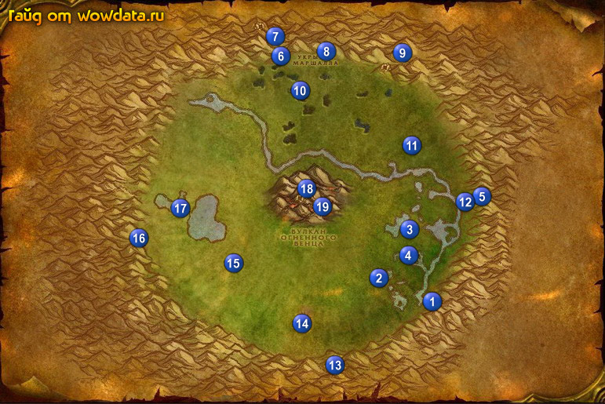

1) Собирайте кристаллы (нужно 7 зеленые, красных, синих и желтых), Куча грязи из Ун'Горо (так много как только сможете) и [Побеги кровоцвета] (сохраните 15 штук).
2) Рапторов имеет смысл убивать только ради 1 вещи: [Изодранный дневник]. Как только вы его получите, закончите уничтожать бедных животных, а то гринпис наедет.
3) Идите по дороге к водопаду 1 (71, 75) начните там <Обезьяны Ун'Горо> и <Добыча Лар'корви>.
4) Найдите 2 (63, 69) и начните <Тайна, покрытая мраком>, мешок находится в 2 шагах под водой, откройте его закончите квест и начните <Тайна, покрытая мраком>.
5) Ищите Свежий труп млатозуба 3 (68, 56) для квеста <Добыча Лар'корви>.
6) Вернитесь назад 1 (71, 75), закончите <Добыча Лар'корви> и начните <Запах Лар'корви>.
7) Делайте <Запах Лар'корви>, для этого ищите яйца 4 (67, 63 например) рапторов, чистите территорию вокруг них от монстров и стойте у них, ждите мамашу, когда прибежит раптор убейте его и заберите квест итем (нужно 2).
8) Когда закончите вернитесь обратно к водопаду закончите <Запах Лар'корви> и начните <Приманка для Лар'корви>. К этому моменту у вас точно должен быть найден журнал. Если нет бейте рапторов пока не найдете журнал, и затем начните квест <Дневник Вилидена>.
9) Отправляйтесь делать <Приманка для Лар'корви> 5 (79, 49), там вы найдете большой скелет, так же вы увидите камень, положите на него мясо (используя его в паке) а потом на мясо используйте [Консервированная смесь феромонов], который вам дали вместе с мясом. Это приманит Лар'корви. Убейте его, он 56 но очень слабый.
10) Начните <В поисках Чи-Та 3> 6 (46, 13), бегите наверх горы рядом с ней (нпс квестовый) в Укрытие Маршала.
11) С левой стороны на возвышенности (сразу не видно) начните <Крылолет Шиззла> 7.
12) Слева начните <Майджин и Ларион> 7 (43, 10)
13) Недалеко от него начните <Потерялся!> 7 (44, 8) и с таблички начните <Осторожной, злой жутедактиль>.
14) У входа в пещеру начните <Игра в кости>.
15) Если у вас есть 15 [Побеги кровоцвета] здайте их кодо для <Даданга проголодалась!>.
16) Справа от пещеры начните <Экология чужих>, рядышком закончите <Дневник Вилидена> и начните <Спасение экспедиции>.
17) Чуть ниже, за деревом закончите <Тайна, покрытая мраком>, все итемы есть в сумке, которая у вас в паке лежит, начните <Тайна, покрытая мраком>.
18) Откройте пункт полета справа от пещеры. Идите в пещеру до конца и начните <Кристаллы Силы>. Закончите его и начните 3 полиморф квеста: <Северный пилон>, <Восточный пилон> и <Западный пилон>.
19) Всякий раз когда вы видите следующих монстров убивайте их, чтобы закончить квесты:
20) Бейте кровоцветов для <Майджин и Ларион>.
21) Бейте диметрадонов и птеродактелей для <Крылолет Шиззла> и <Игра в кости>.
22) Бейте Жутедактиль и Бесноватый жутедактиль для <Осторожной, злой жутедактиль>.
23) Найдите кристал для <Северный пилон> 8 (54, 13).
24) Бейте горилл 9 (63, 16) для <Обезьяны Ун'Горо>, затем идите в пещеру и справа закончите <В поисках Чи-Та 3>, следующую часть игнорируйте.
25) Бейте мобов 10 (52, 23) для <Суперлипучка>.
26) Возьмите [Ящик с провизией] 11 (68, 36) для <Спасение экспедиции>.
27) Идите на восток для <Восточный пилон> 12 (76, 51) – кристалл на верху.
28) Идите закончите <Приманка для Лар'корви> 1 (71, 75) и <Обезьяны Ун'Горо>, игнорируйте следующую часть.
29) Сейчас вы должны быть очень близко к 52 лвл если уже не стали 52.
30) Идите в центр карты и бейте птеродактелей для <Осторожной, злой жутедактиль>, их можно быть до точки 13 (55, 90).
31) Добейте мобов для <Крылолет Шиззла> (шкуры прерадактелей дособерите чуть позже) и <Игра в кости>.
32) Идите на запад в 14 (50, 77) и делайте <Экология чужих>. Как войдете идите на лево в 1 комнату, там по центру встаньте на выступ и юзайте бутылку.
33) Из мобов вы должен выпасть [Ароматическая железа Гориши] для <Путаница в джунглях>.
34) Идите возьмите [Исследовательское оборудования] 15 (38, 65) для <Спасение экспедиции>.
35) Добейте Бесноватый жутедактиль для <Осторожной, злой жутедактиль>, они с левой стороны локации.
36) Идите сделайте <Западный пилон> 16 (23, 59). И бейте птеродактелей заодно, если вы их еще не добили.
37) Начните <Найти источник> 17 (30, 50).
38) Идите бейте элементарей для <Вулканическая активность> 18 (51, 48), старайтесь избежать встречи с 56 элитными.
39) Заодно делайте <Найти источник>. Ищите по торчащим огненным скалам – когда найдете используйте термометр и все. Я нашел наверху, там где и сидит 56 элитный элементарь, однако говорят что есть и где-то внизу.
40) Идите закончите <Найти источник> 17 (30, 50), начните <Новые источники>.
41) Идите внутрь пещеры 19 (52, 51) и закончите <Потерялся!>, далее начните
<Дружеская помощь> и делайте его. Закончите 7 (44, 8) его и <Осторожной, злой жутедактиль>.
42) Закончите <Крылолет Шиззла>.
43) Закончите <Майджин и Ларион>, игнорируйте следующую часть.
44) Закончите <Игра в кости>.
45) Закончите <Экология чужих>.
46) Закончите <Спасение экспедиции>.
47) В пещере закончите <Северный пилон>, <Восточный пилон> и <Западный пилон>, начните <Давай-ка разберемся>, и закончите его тут же.
48) Откройте пункт полета и летите в Прибамбасск.
49) На северо-западе города закончите <Путаница в джунглях>, пропустите следующую часть, а на улице закончите <Суперлипучка>.
50) По камню вернитесь в Дарнасс, выучите новые скилы.
51) Закончите <Почва Ун'Горо>.
52) На верху башни у архи друида начните <Изучение рассветницы>, спуститесь на этаж в низ и закончите его, начните <Изучение рассветницы>.
53) Бегите в Деревня Рут'теран и в доме начните <Осененные луной дикосовухи> - это квест на перья в Зимние Ключи.